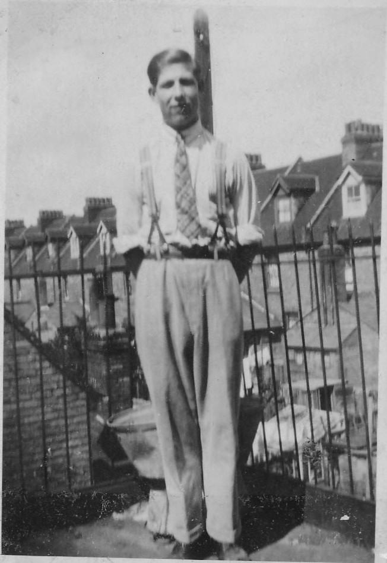

Horace Stanley Wallis Page 1913 - c2000
[ Home ] | [ Calendar ] | [ Surnames Index ] | [ Errors ] | [ Family History ]A transport worker haulage and the child of William Sellis (a general labourer) and Ellen Wellard, Horace Page, the fourth cousin on the father's side of Nigel Horne, was born in Elham, Kent, England on 11 Nov 19131,2 and married Edith Alexander (with whom he had 5 children: Norman J, Alan Stanley, Gwendolyn E, John H and Janice M, along with 4 surviving children) in Elham around Aug 19383. On 29 Sept 1939, he was living at 30a Oaks Road, Folkestone, Kent, England1.
He died c. Nov 2000 in Ashford, Kent, England2.
Parents
- William Ernest was born on 12 Mar 1881
- Ellen Fanny Maria was born on 2 Mar 1880
Children
- Alan Stanley was born on 28 Aug 1939
Citations
- 1939 Register - Findmypast (was the head of the household)
- England & Wales deaths 1837-2007 - Findmypast
- England & Wales Marriages 1837-2005 - Findmypast
Media
Horace Page

England & Wales deaths 1837-2007 - BMD/D/2000/12/83872563
England & Wales births 1837-2006 - BMD/B/1914/1/AZ/001146/058
England & Wales marriages 1837-2005 - BMD/M/1938/3/AZ/001232/135
1939 Register - TNA/R39/1724/1724I/007/14
Family Tree

Map
Generated by ged2site. Last updated on Jul 3, 2024
Known Issues
Surname is different from both parents
No records of living with anyone